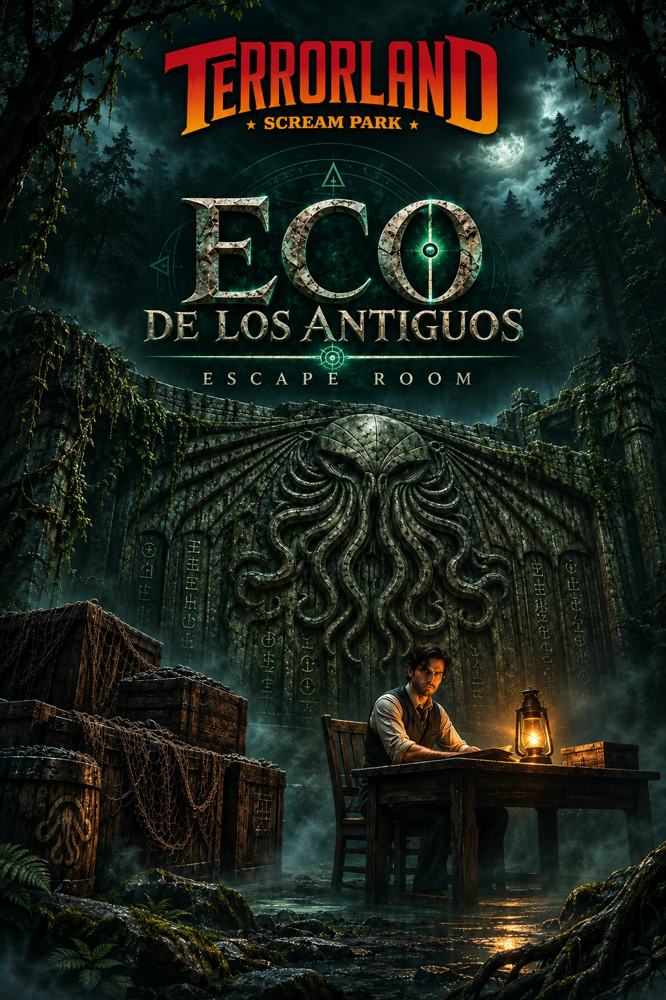

Ficha de catálogo
Ecos de los Antiguos
Terrorland
Ficha de Ecos de los Antiguos de Terrorland en Puertollano, con datos de ubicación, duración, jugadores y enlaces de consulta.

Ficha de Ecos de los Antiguos de Terrorland en Puertollano, con datos de ubicación, duración, jugadores y enlaces de consulta.
🏛️ ¡Un templo perdido, secretos que jamás debieron descubrirse y una antigua civilización cuyo legado podría despertar fuerzas más allá de la comprensión humana!
Durante siglos, las leyendas han hablado de lugares ocultos donde reposan conocimientos prohibidos, reliquias de un poder inimaginable y misterios que desafían todo aquello que conocemos sobre nuestro mundo.
Muchos los consideraban simples mitos... Hasta ahora.
¡El legendario Templo Esmeralda ha sido descubierto!
Entre sus antiguos muros de piedra se esconden los vestigios de una civilización olvidada, artefactos milenarios y símbolos vinculados a uno de los mayores misterios de la humanidad: la legendaria ciudad sumergida de R'lyeh, un lugar envuelto en oscuridad y relacionado con las inquietantes criaturas de los Mitos de Cthulhu.
📜 Pero hay conocimientos que nunca deberían caer en manos humanas...
Las antiguas inscripciones hablan de secretos capaces de cambiar nuestra percepción de la realidad. Extraños ecos parecen atravesar los muros del templo, como si algo que lleva incontables siglos aguardando en las profundidades intentara comunicarse con quienes se atreven a penetrar en su interior.
Y ahora, esos exploradores seréis vosotros.
🔱 ¡Ha llegado el momento de adentraros en el Templo Esmeralda y descubrir qué esconden sus ruinas!
Durante aproximadamente 60 minutos, vuestro equipo deberá enfrentarse a una investigación marcada por el misterio, el terror y los secretos de una mitología ancestral.
Tendréis que agudizar los sentidos, interpretar las señales que os rodean y utilizar vuestro ingenio para descubrir qué relación existe entre los conocimientos prohibidos del templo, sus misteriosos artefactos y el camino hacia la ciudad perdida de R'lyeh.
Pero cuanto más os acerquéis a la verdad, más inquietante se volverá una pregunta...
¿Y si algunos secretos permanecen enterrados porque descubrirlos puede tener consecuencias terribles?
🌑 Inspirado en el universo del horror cósmico de H. P. Lovecraft, Ecos de los Antiguos propone una experiencia de escape room de terror donde las antiguas leyendas, las fuerzas desconocidas y el temor a aquello que escapa a la razón humana forman parte de la aventura.
La experiencia está diseñada para grupos de 6 a 10 participantes y forma parte de Terrorland, el scream park celebrado en Puertollano (Ciudad Real). Aunque se encuentra integrado en el evento, puede disfrutarse como una actividad independiente, con entrada específica, sin necesidad de participar en las demás atracciones del recinto.
🐙 El Templo Esmeralda ha abierto sus puertas, los ecos de una civilización perdida vuelven a escucharse y el misterio de R'lyeh espera ser desvelado...
📜 ¿Seréis capaces de interpretar los secretos de los antiguos y descubrir qué se esconde tras las leyendas de la ciudad sumergida?
🔱 ¿O acabaréis comprendiendo, demasiado tarde, por qué hay verdades que jamás deberían ser reveladas?
🌑 ¡Las profundidades guardan sus secretos desde hace milenios... y ahora están esperando vuestra llegada!